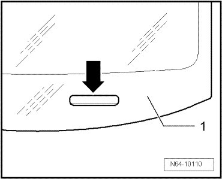

Windshield With VIN Viewing Area, Preparing
Flush Bonded Windows
Windshield with VIN Viewing Area, Preparing
In the future, there will only be windshields with viewing window for VIN.
In vehicles without VIN, the viewing window in the windshield must be blackened (primed) from the inside.
- Clean viewing window - arrow - of windshield - 1 - from inside using cleaning solution (D 009 401 04).

- Blacken the viewing window - arrow - from inside using glass/paint primer (D 009 200 02).
- Apply glass/paint primer (D 009 200 02) using applicator D 009 500 25 evenly in one stroke on the cleaned area of the windshield.
- The viewing area can be primed a second time after drying for about 10 minutes.
- The new windshield can be installed after that.